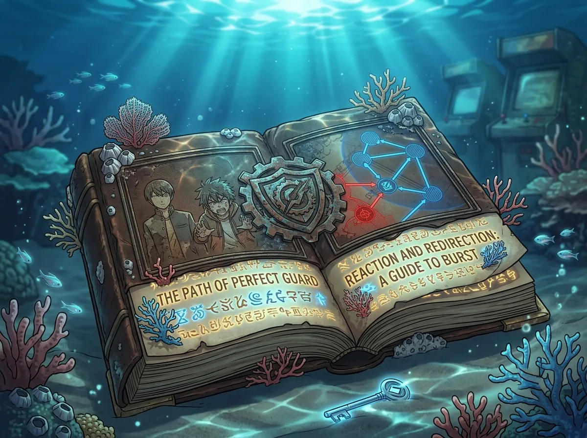
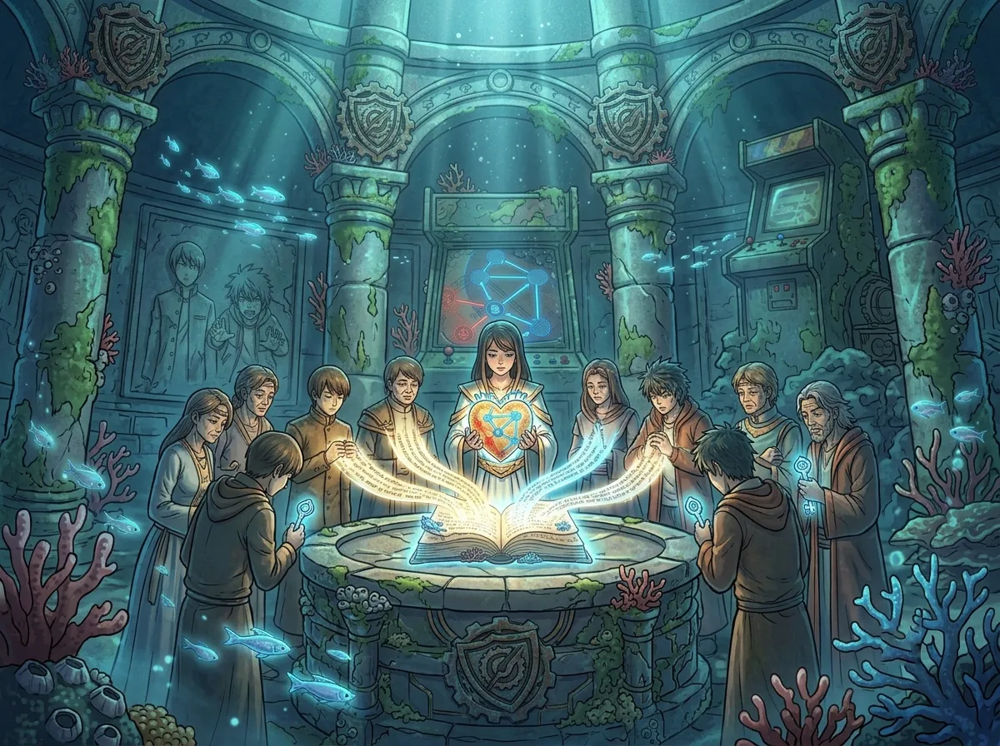
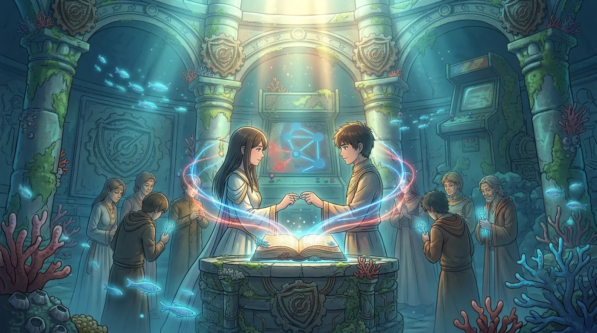
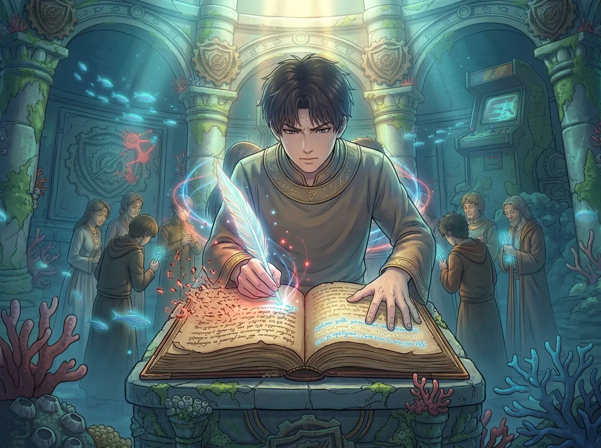
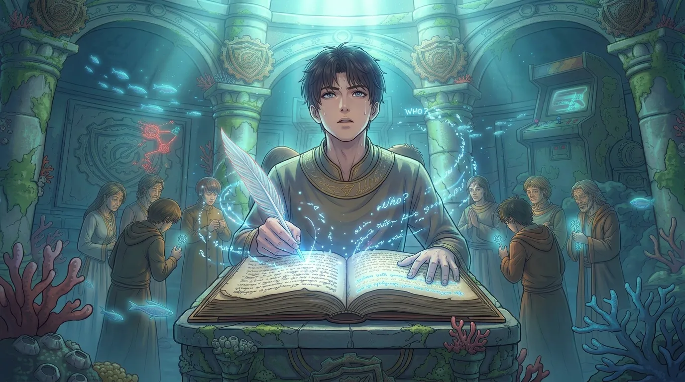

If the prophecy ends in destruction, why write it down?
There is a book at the center of Rafayel's story. It is called the Tome of the Sea God.
It is not a history book. It is not a collection of myths. It is something stranger: a book that contains the future.
Each Sea God writes a new prophecy into it. Their words become law. Their predictions become fate. Their choices become inevitable.
And yet — Rafayel, the last Sea God, spends both of his Myths trying to rewrite it.
If the prophecy ends in destruction, why was it ever written? And if it can be rewritten, was it ever a prophecy at all?

In the world of Love and Deepspace, the Tome of the Sea God is an ancient Lemurian religious text that serves three distinct purposes: it is a record of Lemurian culture and history, a collection of prophecies about Lemuria's inevitable demise and potential resurrection, and a guidebook for the rituals and traditions of the Lemurian people [citation:2][citation:8].
With each new incarnation of the Sea God, a new prophecy is written into the Tome [citation:2]. This means the book is not static—it grows with each generation, accumulating layers of prediction and fate. The Sea God's words become, in essence, the law that the Lemurian people must follow.
One of the most famous passages from the Tome appears in Chapter 3, quoted in the Forgotten Sea Myth:
The Tome is not just a book. It is the soul of Lemuria. And Rafayel, as the last Sea God, is both its author and its prisoner.

The central prophecy of Lemuria is this: for the Sea God to fully absorb his power and protect the ocean, a human heart must be sacrificed to him [citation:2].
Why a human heart? The Tome explains that humans are considered the greediest creatures to exist—and because of their selfish nature, any gift they give or sacrifice they make is considered far more valuable than a sacrifice made by any other species [citation:2].
The MC, in the Forgotten Sea Myth, is chosen as that sacrifice. She is thrown overboard during a storm, taken by Rafayel, and told that she must become his "most devout follower"—which means, in practice, that she must fall utterly and completely in love with him [citation:2].
But there is a catch. The Tome also says that once a Sea God has chosen his devout follower, he becomes bound to that person's every command. He can never go against their wishes. If he disobeys even once, the bond is broken [citation:2][citation:8].
The prophecy is built on a contradiction: the Sea God must take a human heart to save his people, but the act of choosing that human gives them power over him.

In the final chapter of the Forgotten Sea Myth, the ceremony takes place [citation:8]. Thousands of years of tradition, prophecy, and expectation converge in the Temple of the Sea God.
Rafayel is supposed to take MC's heart. Instead, he gives her his own [citation:8]. He betrays Lemuria for his beloved. The act angers the Deep Sea itself [citation:8].
This moment is the central paradox of Rafayel's story: he is the Sea God, chosen to fulfill the prophecy. But when the prophecy demands that he destroy the one he loves, he refuses.
He chooses love. He chooses to break the prophecy. He chooses to become a traitor to his own people.
But he does not choose to let Lemuria die. He simply chooses to save her first.
Rafayel didn't know the full cost of his choice when he made it. The Tome warned: if the flame at the center of Whalefall City is ever extinguished, Lemuria will fall into a deep slumber for hundreds of years [citation:2].
His choice—giving his heart instead of taking one—may have been the act that extinguished that flame. He saved MC. He sacrificed Lemuria. And then he spent the rest of his existence trying to undo it.

In the Sea of Golden Sands Myth (sometimes referred to as the Abysswalker timeline), the story continues. Thousands of years later, Lemuria is gone—a "sea of golden sands" where the ocean used to be. Rafayel has become an assassin, tasked with assassinating a princess whose heart is the key to resurrecting his kingdom [citation:6].
That princess is MC. And once again, the Tome of the Sea God presents him with the same impossible choice [citation:8].
But this time, Rafayel does something different. He doesn't just choose love. He chooses to change the book itself. He rewrites the Tome, erasing MC's memories and altering the prophecy [citation:9].
He does not destroy the prophecy. He rewrites it. He does not abandon hope for Lemuria. He simply refuses to let it require her death.
In the end, MC reclaims her memories and returns to him. Together, they leave the desert [citation:7]. The prophecy is not fulfilled—but it is also not obeyed.
There is a profound philosophical choice at the heart of Rafayel's story: do you follow the prophecy or do you rewrite it?
In the first Myth, he breaks the prophecy. He does not take her heart. Lemuria suffers. In the second Myth, he rewrites the prophecy. He changes the terms. And in doing so, he creates space for a new future—one that does not demand destruction.
Rafayel doesn't just reject fate. He challenges the idea that fate must be obeyed.

This is the question that haunts Rafayel's entire story.
If the Tome of the Sea God predicted Lemuria's destruction—and it did—then why did the Sea Gods keep writing new prophecies into it? Why did they keep adding predictions that pointed toward doom?
Here is the answer that the story offers: prophecies are not commands. They are descriptions of what will happen if nothing changes.
The Tome was never meant to be obeyed blindly. It was meant to be read, understood, and—when necessary—challenged.
Rafayel is not the first Sea God to question the Tome. But he is the first one who loved the person the prophecy demanded he destroy.
That love is what gave him the courage to rewrite it.
If you read the Tome of the Sea God as a fixed destiny, then Rafayel is a failure—he couldn't save Lemuria, he couldn't follow the prophecy, he couldn't do what was asked of him.
But if you read the Tome as a document that was always meant to be questioned, then Rafayel's choice is not failure—it's the first act of freedom that Lemuria had seen in generations.
He gave his heart away. He rewrote the book. He walked away from the prophecy. And in doing so, he opened the door for something new.
Rafayel's story is not about a god who failed his people. It is about a man who refused to let a prophecy dictate his heart.
The Tome of the Sea God is not a command. It is a warning. It describes a future that will happen if nothing changes. And Rafayel, by choosing love over prophecy, ensured that something did change.
He didn't burn the book. He rewrote it. He didn't destroy Lemuria's hope. He created a different kind of hope—one that didn't require her heart as payment.
If the prophecy ends in destruction, why write it?
Because a prophecy is not a destiny. It's an invitation to prove it wrong.